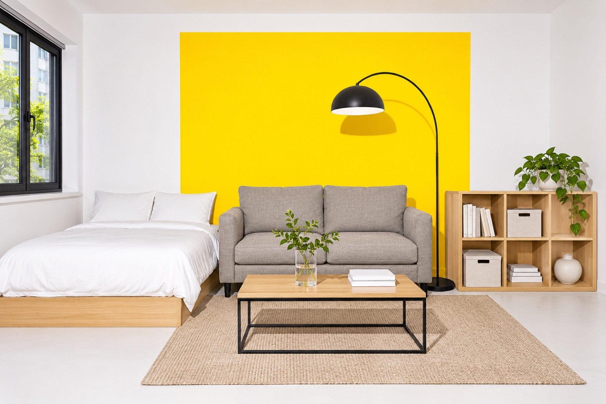

訂單狀態：待付款
設計稿 06平價快時尚
設計 Guideline
NestCraft 限時快閃的色彩、字級、間距、線條與元件規範。scss/ 裡的 token 與共用 class，
概覽
像週末快閃特賣會的入口：
- 風格定位
- 06 平價快時尚
- 色系搭配
- 高飽和＋暖色系（電光亮黃、極致純黑、白底）
- UI 視覺特點
折價券倒數、大字號金額標籤，CTA 吸睛
- 品牌
- 專為租屋族與小資家庭設計的模組化家居電商，主打「靈活收納、小坪數友善」。
以上文字引用自課程規格文件（Notion）的風格表。

設計原則
-
色塊切分版面
不用卡片陰影分組，用滿版的黃塊、黑帶與白底切開區塊。黃色每個畫面約佔 15～25%，內文一律放在白底。
-
價格是主角
每個畫面最大的字是價格或標題。所有金額都用價格牌
.price-tag：NT$縮小、數字用 Inter Tight 900。NT$16,800 -
一個區塊一顆黃按鈕
黃底黑框的
.btn-volt只給最重要的那一個行動；其他行動退成黑底或白底黑框。 -
行動固定在底部
購物車與結帳的金額與按鈕，固定在視窗底部的黑色結帳列
.buybar，捲到哪裡都看得到。
頁面清單共 10 頁
頁首、頁尾在每一頁都完整寫一份。guideline.html。
-
設計 Guideline
guideline.html本頁：滿版黃色海報封面、黏性黑色目錄列，12 節規範（必含的 6 項，加上價格牌、折價券與倒數、按鈕三階、固定結帳列四節元件規格）。
-
首頁
index.html左右半版滿版 Hero：左半電光黃塊放兩行 H1、兩顆按鈕與白色票券倒數，右半照片出血到右緣。接著黑帶四大堅持、三張 lookbook 同時攤開（熱點點開商品小卡、整套價）、人氣嚴選 4 欄閃電結帳、見證與承諾，最後是黑帶左右半 CTA。
-
商品一覽
products.html沒有側欄：H1 旁黃底「10 件」，黏性分類列（分類按鈕、篩選抽屜、排序）停在黑列下方；4 欄無框密集卡，第 5 格是黃色直式票券、最後一格是黑色「先量尺寸，再挑家具」，共 12 格 3 列。
-
商品詳情
product.html以橡木餐桌示範。左 7 欄四張圖片直排長捲（沒有縮圖、沒有輪播），右 5 欄資訊：黃色價格吊牌 64px、庫存黑框標籤、小票券、尺寸大字、數量與兩顆等寬按鈕；下方滿寬分頁與相關商品。992px 以下底部固定白色購買列。
-
購物車
cart.html1280 版心：箭頭步驟第 1 段、H1 旁「4 件」；左 8 欄品項列（小計 28px），右 4 欄直式折價券進度票券（81%、還差 NT$ 4,750）、折扣碼與服務說明。金額摘要在視窗底部的黑色結帳列。
-
結帳
checkout.html1280 版心：箭頭步驟第 2 段、灰底訂單摘要條（三項商品橫排＋折價券提示），收件｜配送｜付款三欄並排，每欄頂端 64px 大數字；發票與備註在下方，「確認付款」在固定結帳列。
-
付款結果
order-result.html1080 版心：箭頭步驟三段全黑，黑色成功帶（黃方塊黑勾＋H1，右側付款金額 64px 黃字），四欄資訊格、購買品項、「接下來會發生什麼」三欄與兩顆等寬按鈕。
-
登入
login.html滿版左右半：左半照片，左下角壓一張白底黑框票券（倒數）；右半白底表單，最寬 440、垂直置中。Email、密碼（右側顯示密碼方鍵）、記住我、LINE 與 Google 登入。
-
註冊
register.html和登入同一個左右半版型；說明下方多三個加入會員的好處，欄位是姓名、Email、密碼、確認密碼，密碼規則用黑框小方塊提示，最後是同意條款與黃色「註冊」。
-
我的訂單
orders.html1080 版心、沒有會員側欄：黑色會員列、粗字底線狀態分頁（可以實際切換），5 筆票根式訂單卡，左側 120px 整條狀態色塊＋2px 黑虛線撕線，出貨中多一條 4 段箭頭進度。
修改這套設計稿
- 每一頁都是一份完整的 HTML，用
<a href="products.html">這類相對連結換頁，瀏覽器直接打開就能看；商品詳情只有一頁product.html。 - 頁首（黃色倒數條＋黑列）與頁尾在 10 頁都完整寫一份。要改時先改
templates/page.html，再貼到每一頁，最後執行npm run check，應輸出「全部 10 個頁面的共用區塊都與範本一致」。 - 導覽連結的 class 只能是
nav-link或nav-link active，樣式從父層.site-nav選；目前頁加aria-current="page"（首頁、商品一覽、我的訂單），商品詳情標「商品一覽」但不加aria-current。 body的 class 每頁可以不同：購物車、結帳加has-buybar，商品詳情加has-buybar-sm（固定結帳列的留白，見第 09 節）。- 價格、尺寸、品名等假資料直接寫在 HTML。同一件商品會出現在商品卡、商品詳情、購物車與訂單，改資料時要一起改。
- 樣式寫在
scss/，執行npm run css編譯成css/style.css；互動只用 Bootstrap 的data-bs-*與js/main.js的六個小功能（手機搜尋聚焦、顯示密碼、分頁籤與目錄捲進畫面、我的訂單的狀態篩選、折價券倒數、加入購物車示意）。
色彩
白底打底、純黑切分、電光黃只當「面」。
數值來源：_variables.scss 1. 色彩
電光亮黃
#FFE500
$volt
- 角色
- 主要 CTA 底、價格吊牌、倒數條、選中狀態、Hero 色塊、頁尾
- 對比
- 黃底黑字 16.46:1
- 限制
- 白底上只有 1.28:1，不當文字、線條、圖示
極致純黑
#000000
$black
- 角色
- 主文字、頁首黑列、黑帶、深色按鈕、框線
- 對比
- 黑底白字 21.00:1、黑底黃字 16.46:1
- 說明字
- 黑底上的次要字用 #B3B3B3（10.02:1）
白底
#FFFFFF
$white
- 角色
- 頁面底、卡片、輸入框；所有內文區塊
- 對比
- 白底黑字 21.00:1、次要文字 6.69:1
- 面積
- 每個畫面最大的一塊，約 60%
每個畫面的面積
白底最大、黑帶次之，黃色控制在 15～25%（Hero 左半、主要按鈕、價格吊牌、倒數條、頁尾）。黃塊上不放長段落；空間照每張只有一個黃色元素，商品照不放黃色。
白 約 60%
黑 約 20%
黃 15～25%
完整色票
-
白底
$white#FFFFFF
頁面底、卡片、輸入框
黑字 21.00
-
極致純黑
$black#000000
主文字、頁首黑列、黑帶、深色按鈕、輸入框框線
白字 21.00、黃字 16.46
-
電光亮黃
$volt#FFE500
主要 CTA 底、價格吊牌、倒數條、選中狀態、Hero 色塊、頁尾、螢光筆
黑字 16.46；對白 1.28
-
亮黃淺
$volt-tint#FFF59E
選項卡、商品分類、顯示密碼鈕的 hover 底；付款處理中的按鈕底
黑字 18.81、灰字 5.99
-
商品圖底
$grey-100#F3F3F3
商品圖底、訂單摘要條、狀態示意舞台、未到的箭頭步驟
黑字 18.93、灰字 6.03
-
hover 圖底
$grey-150#EDEDED
商品卡 hover 時的圖底；實作是在圖片上疊一層 3% 黑，看起來接近這個值
黑字 17.94
-
停用底
$grey-200#E6E6E6
停用按鈕、已售完、已取消、停用的選項卡
停用字 5.97
-
分隔線
$grey-300#D6D6D6
清單之間的髮絲線、進度條軌道底
黑色填色對它 14.45
-
停用虛線
$grey-400#8A8A8A
停用、已售完、已取消的虛線框；只當框線，不當文字
對白 3.45（非文字 3:1）
-
placeholder
$grey-500#6E6E6E
輸入框的提示文字（只寫範例格式，不取代標籤）
對白 5.10
-
次要文字
$grey-600#5C5C5C
分類、尺寸、說明、麵包屑；
$secondary白 6.69、灰底 6.03、黃底 5.24
-
停用文字
$grey-700#555555
停用按鈕、停用欄位、已售完的價格吊牌
停用底 5.97、白 7.46
-
黑底次要字
$on-dark-muted#B3B3B3
黑帶、黑色結帳列、會員列、熱點小卡上的說明文字
對黑 10.02
-
成功
$green#0A7A3B
成功提示（實心綠底白字）
白字 5.44
-
錯誤
$red#D3001C
錯誤提示、欄位紅框與錯誤訊息、付款未完成的紅色帶；不放黃底
白 5.55；黃底只有 4.35
-
資訊
$blue#0047BB
資訊提示（實心藍底白字）
白字 8.02
警示與低庫存不另設顏色：用黃底黑字（.tag-volt、.alert-warning，16.46:1），只放提醒，不放錯誤。
文字與底色的組合
內文至少 4.5:1，大字與圖示至少 3:1。最後兩格是不准出現的組合。
-
Aa白底黑字
-
Aa黑底白字
-
Aa黃底黑字
-
Aa黑底黃字
-
Aa黑底次要字
-
Aa白底次要字
-
Aa灰底次要字
-
Aa黃底次要字
-
Aa紅底白字
-
Aa綠底白字
-
Aa藍底白字
-
Aa停用底停用字
-
Aa白底 placeholder
-
Aa黃底紅字
-
Aa白底黃字
Bootstrap 主題色與語意變數
$primary 是黑色，所以 Bootstrap 的 .text-primary、.btn-primary 都是黑；黃色另外加成 "volt"（產生 .bg-volt、.text-bg-volt），黃色按鈕用自訂的 .btn-volt。
| 變數 | 值 | 用在哪裡 |
|---|---|---|
$primary、$dark | $black | 主要文字、深色按鈕、選中的列表項目 |
$secondary | $grey-600 | .text-secondary：說明、尺寸、分類 |
$warning、"volt" | $volt | 低庫存標籤、提醒提示、.bg-volt |
$success／$info／$danger | $green／$blue／$red | 實心色帶提示 .alert-*，白字 |
$light | $grey-100 | .alert-light、淺灰面 |
$body-color、$border-color、$link-color | $black | 內文、所有框線、連結（底線 .2em 偏移） |
$body-secondary-color | $grey-600 | 次要文字 |
$focus-ring-color | $black | 焦點環（黑色面上由 .on-dark 改成黃色） |
$input-placeholder-color | $grey-500 | 輸入框提示文字 |
$input-disabled-bg／-color／-border-color | $grey-200／$grey-700／$grey-400 | 停用欄位 |
$dropdown-link-hover-bg | $volt-tint | 下拉選單 hover 底 |
$progress-bg／$progress-bar-bg | $grey-300／$black | 購物車的折價券進度條 |
字級
粗黑體喊出重點：
數值來源：_variables.scss 2. 字體與字級
Inter Tight
數字、價格、倒數、logo、標題裡的西文；$font-family-num、.num
- 0123600
- 0123800
- 0123900
Noto Sans TC
中文標題、品名、按鈕、內文；$font-family-base
- 內文400
- 強調500
- 品名700
- 標題900
Google Fonts：Inter+Tight:wght@600;800;900、Noto+Sans+TC:wght@400;500;700;900。所有數字加 font-variant-numeric: tabular-nums，倒數每秒變化時寬度不變。
字級表桌機／手機，992px 切換
-
把有限的坪數，
- Display：首頁 H1
- 72／40px、900、行高 1.1
.display-hero（首頁用clamp()保持兩行）
-
填寫資料與付款
- H1：頁面標題
- 44／32px、900、行高 1.2
h1、.h1
-
人氣嚴選｜空間放大的秘密武器
- H2：區塊標題
- 36／26px、900、行高 1.25
- 黃色螢光筆底
.marker；黑帶上改黃字、不加螢光筆
-
購買品項
- 小節標題
- 24／22px、900，下方 2px 黑線
.rule-title（付款結果、本頁小節）
-
自由模組變化
- H3：卡片與欄位群組標題
- 20／18px、700、行高 1.4
h3、.h3
-
嚴選北美 FAS 級白橡木打造，保留天然溫潤的木紋肌理與原木觸感。
- 內文
- 15px、400、行高 1.7
- 密度高，但內文不小於 15px
-
餐桌椅｜W160 × D80 × H75 cm
- 輔助文字
- 14px、400、行高 1.6
- 分類、尺寸、說明；
.small、.form-text
-
現貨 僅剩 5 件
- 標籤、按鈕
- 標籤 14px、按鈕 16px，都是 700；
.btn-volt17px 900
價格字級.price-tag 的尺寸
本風格的字級階梯，最上層不是標題而是價格。同一個畫面裡，越接近付款的金額越大。
-
NT$7,800
18px
.price-tag-sm：首頁 lookbook 卡的商品清單、熱點商品小卡 -
NT$16,800
28／22px
.price-tag-card：商品卡、購物車與付款結果的品項小計、訂單明細 -
NT$26,680
32px
.price-tag-set：首頁整套價、我的訂單金額、付款結果的付款金額列 -
NT$20,250
40／28px
.price-tag-total：固定結帳列的應付總計（黑底黃字） -
NT$20,250
64／44px
.price-tag-hero：商品詳情的黃色吊牌、付款結果成功帶的付款金額
數字與換行
等寬數字 .num
NC-20260923-001
共 4 件，預計到貨 2026-10-02
滿 NT$ 25,000 折 NT$ 1,000
- 訂單編號、件數、日期、倒數、門檻金額都包
.num（Inter Tight 800、等寬）。 - 數字與單位之間用不換行空白
：NT$ 4,750、14 天、48 小時。
品名換行 .text-phrase＋<wbr>
日暮亞麻｜
- 長品名在詞組之間放
<wbr>，配合.text-phrase（word-break: keep-all），只在這些位置換行，「沙發床」不會被拆開。 - 商品卡品名最多 2 行，完整品名在商品詳情看得到。
間距
密度高、節奏快：$spacers 改成八階，
數值來源：_variables.scss 3. 間距
*-14px圖示與文字、標籤之間*-28pxH2 與說明、商品詳情的圖片直排間距*-312px手機商品格的 gutter（gx-3）、按鈕之間*-416px手機版心左右內距、頁首上方、欄位群組之間*-524px桌機卡片 gutter（gx-md-5）、區塊標題列下方（手機）*-640px商品格列距（gy-6）、區塊標題列下方（桌機）*-748px手機區塊上下（.section）、.page-body下緣*-864px桌機區塊上下、設計稿狀態示意上方
頁首節奏與黏性位移
.site-header是 sticky，top: -40px（$site-countdown-height）：往下捲時倒數條離開，黑列（$site-bar-height64px）留在頂端。html { scroll-padding-top: 72px }（$sticky-top-offset）：錨點與 Tab 到的欄位不會被黑列蓋住。- 停在黑列下方的元件：商品一覽的分類列
top: 64px、本頁目錄列top: 64px、商品詳情的資訊欄top: 88px（1200px 以上視窗高 800px 起、992～1199px 視窗高 864px 起；資訊欄要比視窗矮才黏）。 - 本頁章節另加
scroll-margin-top: 52px，點目錄跳過去時標題不會被目錄列蓋住。
版心與區塊
- 版心最寬 1440px（比其他風格寬，商品一次放得多）。
.container左右內距：手機各 16px、768px 以上各 32px，都不小於 gutter 的一半，.row不會溢出。 - 滿版左右半不放在
.container裡：外層加.bleed-split，文字欄用 mixinshell-start／shell-end，內容左緣和頁首 logo 對齊；1920 寬時色塊滿版、文字仍對齊 1440 版心。本頁的三大色塊也是這樣做。 - 區塊：
.section上下 48／64px；區塊標題列.section-head下方 24／40px；首頁以外各頁的頁首.page-header上 16／24px、下 24／40px；內容外層.page-body下緣 48／64px。 - 元件：按鈕 56／48／44px、輸入框與數量方鍵 48px、選項卡內距 16px 且彼此相隔 12px；設計稿狀態示意上方 64px、舞台內距 24／40px。
- 固定結帳列：桌機 88px、手機 72px；頁尾底部內距加上「列高＋16px」，最後一段內容與頁尾不會被蓋住（見第 09 節）。
圓角與陰影
圓角一律 0，陰影完全不用。
數值來源：_variables.scss 4. 邊框、圓角、陰影
圓角一律 0
現貨
$enable-rounded: false，所有$border-radius*都是 0；按鈕、輸入框、標籤、票券、抽屜、Toast 一律直角。數量增減也是方塊。- 例外只有兩個：radio 與首頁情境圖上的熱點圓鈕（
$border-radius-pill）。
陰影：不用
$enable-shadows: false，$box-shadow*都是none。- 浮起的東西：熱點小卡、Toast、固定結帳列、手機選單是黑色實面；商品一覽的篩選抽屜是白底＋黑色標題列，和頁面之間靠 60% 黑色遮罩分開。
_variables.scss也把一般下拉設成白底 1px 黑框、Modal 設成 2px 黑框，目前 10 頁沒有用到。
線
黑 1px輸入框、清單分隔、頁尾分隔
黑 2px按鈕框、選項卡、票券、訂單票卡、區塊上緣
黑 4px（只當底線）分頁籤選中、導覽目前頁（黃色）
灰 1px
#D6D6D6：品項列、表格列之間黑 2px 虛線票券與訂單卡的撕線
灰 1px 虛線
#8A8A8A：停用、已售完、已取消
- 不用 3px 以上的粗框盒、不用硬陰影、不用規格銘牌（那是 03 街頭機能風的語言）。
$border-widths裡的 4px 只拿來畫底線。 - 框線一開始就存在：按鈕、選項卡 hover 時只換顏色，不加框、不變粗，尺寸不變。
鍵盤焦點
白底：3px 黑實線＋2px 偏移
黃底：同樣是 3px 黑實線
黑底：3px 黃實線；照片上的熱點：黑框外加一圈黃
- 焦點用
outline，不用box-shadow模擬，也不改變元件尺寸。黑色面（頁首黑列、黑帶、結帳列、熱點小卡）加.on-dark或.band-dark，焦點自動改成黃色。 - 放在容器裡、外側會被切掉的元件（分頁籤、數量方鍵、箭頭步驟的連結、目錄列）改成內縮焦點框（
outline-offset: -3px）。
價格牌
招牌元素之一「大字號金額標籤」。.price-tag，
數值來源：_base.scss 大字號金額標籤
NT$16,800
幣別
.price-cur數字的 0.42 倍（小價格時至少 11px）、Inter Tight 800，上緣和數字對齊，像價格牌上的小字。數字
.price-numInter Tight 900、等寬數字、字距-0.02em，行高 1。不斷行
white-space: nowrap；390px 寬時最長的「NT$ 32,800」在 44px 也放得下。朗讀讀出來就是「NT$16,800」，不需要另外加
aria-label；吊牌前面加一個visually-hidden的「售價」。
<span class="price-tag price-tag-card"><span class="price-cur">NT$</span><span class="price-num">16,800</span></span>黃色價格吊牌 .price-hangtag
售價NT$16,800
有庫存：黃底黑字（16.46:1），左側尖角＋12px 黑色穿繩孔
售價NT$12,600
.is-off：已售完（藤編收納櫃），停用灰底、數字仍清楚（5.97:1）
- 吊牌只用在商品詳情（橡木餐桌 NT$ 16,800），包住
.price-tag-hero：桌機 64px、手機 44px。旁邊接庫存標籤（.tag-outline「庫存 12 件」或.tag-volt「僅剩 5 件」）。 - 黑色面上的大金額改成黃字：固定結帳列的應付總計、付款結果成功帶的付款金額（黑底黃字 16.46:1）。
- 不做原價刪除線、不做「省下多少」：折價券不改任何金額，總額一律是實際要付的 NT$ 20,250。
折價券與倒數
招牌元素之二。js/main.js 每秒更新。
數值來源：components/_coupon.scss
活動只有一張
NT$1,000
- 內容
- 滿 NT$ 25,000 折 NT$ 1,000，登入（或完成註冊）後領取
- 截止
- 今日 23:59；倒數算到當天 23:59:59，不做歸零就重來的假倒數
- 金額
- 設計稿示意，不套用在任何金額上：購物車 NT$ 20,250 沒有達到門檻（還差 NT$ 4,750），總額、付款結果、訂單金額都和其他風格相同。
票券的五種樣子
黃面上：白底不加框 .coupon-on-volt＋.coupon-lg
限時券
NT$1,000
滿 NT$ 25,000 可用
活動今日 23:59 截止
登入領取
首頁 Hero 的左半黃塊（面額 48px，手機 40px）
旁邊已有黃色大面：白底黑框 .coupon-plain＋小版 .coupon-sm
限時券
NT$1,000
滿 NT$ 25,000 可用
活動今日 23:59 截止
登入領取
商品詳情：黃色吊牌正下方。照片有一大面黃牆的登入、註冊（992px 以上）也改用白底黑框
- 選哪一種只看「放在什麼面上」：白面上用黃底黑框；黃面上改白底不加框；旁邊已經有黃色大面（吊牌、黃牆照片）時用白底黑框，避免黃色連成一片。
- 缺口用
mask挖出 16px 半圓，再用背景畫出 2px 弧線，和外框接成一圈；直式票券的缺口跟著撕線移到兩端。 - 票根放「限時券」標籤（黑底黃字）與面額；主體放截止時間、倒數與動作（黑色
.btn-dark，不搶黃按鈕的位置）。
倒數 .countdown
頁首倒數條 16px活動今日 23:59 截止
小票券、進度票券 20px活動今日 23:59 截止
票券
.countdown-lg 28px活動今日 23:59 截止<span class="coupon-deadline" aria-hidden="true">今日 23:59 截止</span>
<span class="countdown countdown-lg">
<span class="visually-hidden">活動今日 23:59 截止</span>
<span class="countdown-num" data-countdown aria-hidden="true">05:42:18</span>
</span>- HTML 先寫一個靜態值（05:42:18），
js/main.js載入後每秒把所有[data-countdown]換成到今天 23:59:59 的HH:MM:SS。JS 失效時，旁邊仍有「今日 23:59 截止」。 - 數字加
aria-hidden="true"，旁邊放visually-hidden的「活動今日 23:59 截止」；不加aria-live，否則螢幕閱讀器會每秒朗讀一次。 - Inter Tight 800、等寬數字、
min-width: 8ch：每秒變化時寬度不變，不推擠旁邊的文字。 - 不做翻牌、冒號不閃、歸零不重來。倒數是資訊不是動畫，
prefers-reduced-motion時照常更新。
出現在哪些頁面
| 頁面 | 位置與樣子 |
|---|---|
| 全部 10 頁 | 頁首的黃色倒數條（40px）：黑底黃字「限時券」＋門檻＋「今日 23:59 截止」＋倒數＋「登入領取」。992px 以下拿掉截止文字、改用「｜」分隔，768px 以下拿掉「限時券」，576px 以下再拿掉「｜」，一直維持一行。這是折價券元件，不是公告列。 |
| 首頁 | Hero 左半黃塊上的白色票券 .coupon-on-volt.coupon-lg |
| 商品一覽 | 商品格第 5 格的黃色直式票券方塊（面額依方塊寬度 32～56px） |
| 商品詳情 | 黃色價格吊牌下方的白底黑框小票券 .coupon-plain.coupon-sm |
| 購物車 | 右欄的白底黑框直式進度票券：81% 黑色進度條、還差 NT$ 4,750、「去湊單」 |
| 結帳 | 訂單摘要條最後一行：黑底「折價券」標籤＋「還差 NT$ 4,750，本次不折抵」（沒有倒數） |
| 登入、註冊 | 左半照片的左下角（992px 以上白底黑框；以下在照片下方，黃底黑框）；文字分別是「登入領取限時券」「完成註冊即可領取」 |
| 付款結果、我的訂單、Guideline | 頁面內容不放票券（只有頁首倒數條）：已經付款或是在查訂單，不再推促銷 |
固定結帳列
購物車與結帳的金額摘要不在頁面裡，.buybar：
數值來源：components/_buybar.scss
- 商品小計、運費
兩行白色小字，標籤是
#B3B3B3。992px 以上才顯示；以下改放在購物車品項清單下方。 - 應付總計
黑底黃字
.price-tag-total：桌機 40px、手機 28px（16.46:1）。 - 主要行動
.btn-volt（黑面上不加框）：購物車「前往結帳」、結帳「確認付款」（bi-lock-fill）；最小寬 240／144px。
商品詳情的手機購買列 .buybar-light
- 只在 992px 以下出現（
body.has-buybar-sm）：白底、上方 2px 黑線、高 72px；左價格 24px（576px 以下 20px），右兩顆按鈕。 - 992px 以上資訊欄就在圖片旁邊，購買按鈕一直看得到，所以不需要固定列。
規則
<body class="has-buybar">（購物車、結帳）：頁尾底部內距加上「列高＋16px」（桌機 104px、手機 88px），html的scroll-padding-bottom同值。捲到底時頁尾不會被蓋住，Tab 到的欄位也不會躲在列後面。留白加在頁尾而不是body，黃色頁尾和固定列之間不會露出白邊。- 底色滿版，內容對齊版心（
.container.container-flow，最寬 1280）；1920 寬時黑色鋪滿整個視窗寬度。 - 層級：
z-index: 1030，高於頁面內容，低於頁首（1041）、Offcanvas（1045）、Modal（1055）與 Toast（1090）。加入購物車的 Toast 出現在列的上方（bottom加上列高）。 - 列內有一個
visually-hidden的 H2「金額摘要」，螢幕閱讀器可以用標題跳到這裡。 - 付款處理中：按鈕停用、改成亮黃淺底＋
spinner-border＋「付款處理中…」，避免重複付款（結帳頁的設計稿狀態示意）。 - 設計稿狀態示意區裡的空購物車不放固定列。
元件狀態
預設、hover、焦點、停用、錯誤。
數值來源：_variables.scss 5. 元件、_base.scss
按鈕
.btn-volt
hover 與按下：黑底黃字，框線同色存在，尺寸不變。送出後的處理中狀態：亮黃淺底＋轉圈＋文字，停用但看得清楚。
- 前往結帳
預設
滑過 hover
鍵盤焦點 focus
停用 disabled
處理中
.btn-dark／.btn-outline-dark
黑底 hover 變黃底黑字；白底黑框 hover 變黑底白字。停用都是 #E6E6E6 底、#555555 字、#8A8A8A 虛線框。
預設
滑過 hover
鍵盤焦點 focus
停用（商品卡的已售完）
- 繼續購物
白底黑框：預設
白底黑框：hover
白底黑框：焦點
白底黑框：停用
.btn-text
粗體＋2px 底線，hover 底線加粗到 4px（只變裝飾，不變尺寸）。黑色面上自動改白字。
- 繼續購物
預設
滑過 hover
鍵盤焦點 focus
.btn-close.btn-close-white
手機選單與篩選抽屜的標題列都是黑底，關閉鈕用白色 ×：44 × 44px，hover 出現 2px 黃框，焦點是內縮的 3px 黃框。一定要寫 aria-label（「關閉選單」「關閉篩選條件」）。_base.scss 另備有白底版（hover 亮黃淺底），目前沒有用到。
預設
滑過 hover
鍵盤焦點 focus
表單欄位
每個欄位都有看得見的標籤（15px 700）；說明與錯誤用 aria-describedby 連到欄位。輸入框高 48px、1px 黑框、白底；placeholder 只寫範例格式。Email、密碼、卡號這類欄位不加 name（設計稿用 GET 換頁），但都有 id、<label for> 與 autocomplete。
預設
焦點
只用於配送當天聯繫。
已填寫
錯誤
請填寫收件人姓名。
停用
下拉選單
密碼＋顯示密碼
- 至少 8 碼
- 包含英文字母
勾選
請先勾選同意，才能建立帳號。
數量 .qty
「＋」是 hover：黃底。已售完時整組停用、外框改虛線。
- 焦點：3px 黑實線＋2px 偏移，框線本身不變色。錯誤：紅框（內側再加 1px，尺寸不變）＋紅字訊息，訊息前面放
bi-x-square-fill，不只靠顏色；表單最上方另放紅底白字的提示，寫出還有幾個欄位要處理。 - 停用欄位：
#E6E6E6底、#555555字、#8A8A8A框。 - 顯示密碼：輸入框右側 48px 方鍵，按下後改黑底白字並切換
aria-pressed（js/main.js的data-toggle-password）。
選項卡 .option-card
結帳的配送與付款方式。整張卡都是 <label>，radio 用相同的 name 互斥。
-
選中：黃底、實心 radio
-
預設：白底、2px 黑框
-
滑過 hover：亮黃淺底
-
停用：虛線灰框，寫出原因
導覽、分頁籤與箭頭步驟
頁首導覽 .site-nav
992px 以上是黑列：白字 700，目前頁黃字＋4px 黃底線（底線一開始就以透明色存在），hover 文字加 2px 底線。以下是左側黑色抽屜：白色 22px 大字、每項 56px 高。本例的「首頁」是目前頁的樣子。
底線分頁籤 .nav-underline＋.tab-count
選中：4px 黑底線＋900；未選：灰字；hover（已付款）：黑字＋灰底線；焦點（出貨中）：內縮黑框。數量是小黑方塊。商品詳情的「商品詳情／規格／評價」與我的訂單的狀態篩選都用這個。
箭頭步驟 .chevron-steps
三段 clip-path 箭頭色塊：已完成＝黑底白字＋勾；目前＝黃底黑字、加寬、aria-current="step"；未到＝#F3F3F3 底灰字。結帳頁的「購物車」可以點回去（hover 文字加底線，焦點是內縮黃框）。576px 以下只有目前步驟顯示文字，其他步驟縮到只包住勾或數字，目前步驟的文字完整顯示、不加刪節號。
標籤與訂單狀態
庫存與商品標籤 .tag
現貨
僅剩 5 件
已售完
庫存 12 件
10 件
矩形，不加圓角。庫存少於 10 件時用黃底黑字「僅剩 N 件」（商品一覽、商品詳情同一個門檻）；已售完是灰底虛線框；H1 旁的黃底數字方塊是 .count-chip。
訂單狀態：票根色塊 .orders-card.is-*＋.orders-stub
| 狀態 | 色塊 | 圖示 | 對比 |
|---|---|---|---|
.is-pending 待付款 | 黃底黑字 | bi-clock-fill | 16.46:1 |
.is-paid 已付款 | 白底黑字（靠卡片的 2px 黑框圍出色塊） | bi-check-circle | 21.00:1 |
.is-shipping 出貨中 | 黑底黃字 | bi-truck | 16.46:1 |
.is-done 已完成 | 黑底白字 | bi-check2-all | 21.00:1 |
.is-cancel 已取消 | #E6E6E6 底、#555555 字、內側灰色虛線；金額改灰字 | bi-x-circle | 5.97:1 |
五種狀態用底色＋圖示＋文字區分，不只靠顏色；色塊裡另有 visually-hidden 的「訂單狀態：」。手機是卡片頂端 40px 色帶，768px 以上是左側 120px 整條。_base.scss 另備有同一組配色的小標籤 .badge-status，目前 10 頁沒有用到。
提示訊息 .alert
沒有登入成功
Email 或密碼不正確。
登入：帳密錯誤（bi-x-square-fill）
有 2 個欄位還沒填好
請修正標示紅框的欄位，
結帳、註冊：表單最上方（bi-exclamation-square-fill），寫出幾個欄位要處理
- 實心色帶、直角，不加左側色條。錯誤一律紅底白字（5.55:1），不放黃底（黃底紅字只有 4.35:1）。
- 錯誤訊息說明怎麼修，不用驚嘆號或全大寫。正式使用時，送出後才插入的提示要加
role="alert"。 _base.scss另備有.alert-success（綠底白字 5.44:1）、.alert-info（藍底白字 8.02:1）、.alert-warning（黃底黑字，只放提醒）與.alert-light，目前 10 個頁面只用到.alert-danger。
商品卡 .product-card
無框無圓角、灰底 1:1 圖、左上角矩形標籤、品名最多兩行、價格 28px、滿寬 48px 按鈕。hover 只讓圖底深一點（疊 3% 黑）、品名加底線；不放大圖片，不浮出「快速加入」。
-
現貨
橡木餐桌
NT$16,800
預設（現貨）
-
現貨
極簡床頭櫃
NT$7,800
滑過 hover：圖底深一點、品名底線
-
僅剩 5 件
亞麻雙人沙發
NT$32,800
庫存少於 10 件
-
已售完
藤編收納櫃
NT$12,600
已售完：標籤與按鈕都停用


首頁人氣嚴選的卡片把按鈕換成 .btn-volt.btn-card「閃電結帳」（bi-lightning-charge-fill），一張卡仍只有一顆黃按鈕。
空狀態與設計稿狀態示意
設計稿狀態示意
購物車是空的時
.demo-state：上方 2px 黑線＋黑底黃字標籤＋灰底舞台，和正式內容分開。空狀態 .empty-state 是一句 32／24px 大字、一句說明、一個動作，不放「0 件」方塊或大插圖。
每頁底部的狀態示意
- 商品一覽：篩選後沒有商品時
列出套用中的條件標籤，一句說明＋黑底「清除篩選條件」。
- 商品詳情：已售完時／庫存少於 10 件時／有多種尺寸模式時
每種一列（左說明、右舞台）：灰色吊牌＋「貨到通知我」、黃底「僅剩 5 件」、沙發床兩行尺寸。
- 購物車：購物車是空的時
一句大字＋黃色「去逛逛」；示意區裡不放固定結帳列。
- 結帳：必填驗證與付款處理中
紅底白字提示＋兩個紅框欄位；固定列縮小版的按鈕改成處理中。
- 付款結果：付款未完成時
成功帶換成錯誤紅帶（白方塊紅色驚嘆號），「重新付款」「返回購物車」。
- 登入：登入失敗時
表單上方紅底白字「沒有登入成功」。
- 註冊：送出後有欄位需要修正時
確認密碼紅框、密碼規則符合的變黑底白字＋勾、同意條款的錯誤訊息。
- 我的訂單：篩選後沒有訂單時
切到「待付款」後沒有訂單：分頁保留，清單改成一句大字＋黑底「查看全部訂單」。
首頁與 Guideline 沒有狀態示意。
RWD 斷點
斷點沿用 Bootstrap 預設，
數值來源：_variables.scss 6. 版面
390
576
768
992
1200
1400
1440
1920
- xs 視窗寬度< 576 容器最大寬滿版，左右 16px 變化倒數條只留門檻、倒數與「登入領取」；購物車方塊只顯示數字；商品格兩欄（gutter 12px）；商品詳情圖片一次一張滿版；付款結果按鈕上下堆疊。
- sm 視窗寬度≥ 576 容器最大寬540 變化倒數條加「｜」分隔；購物車方塊加上「購物車」文字；商品詳情圖片一次兩張；登入、註冊的票券置中、最寬 440px；箭頭步驟三段都顯示文字。
- md 視窗寬度≥ 768 容器最大寬720，左右 32px 變化倒數條加「限時券」；商品一覽分類列不再橫向捲動，放不下時換成兩行；商品格三欄、gutter 24px；購物車品項排成一列；我的訂單的票根移到左側 120px；頁尾服務三欄。
- lg 視窗寬度≥ 992 容器最大寬960 變化主要切換點：導覽、搜尋框排進黑列；字級換成桌機值；首頁 Hero、CTA、登入註冊改成左右滿版半塊；商品格四欄；商品一覽分類回到一行；購物車與結帳變成兩欄；固定結帳列顯示小計、高 88px；商品詳情手機購買列消失，資訊欄黏在右側（視窗高 864px 以上）。
- xl 視窗寬度≥ 1200 容器最大寬1200 變化商品一覽排序下拉移進分類列右側；商品詳情資訊欄在視窗高 800px 以上就黏在右側；結帳三個步驟並排；購物車縮圖 128px。
-
xxl
視窗寬度≥ 1400
容器最大寬1440
變化購物車、結帳的版心停在 1280（
.container-flow），付款結果、我的訂單停在 1080（.container-narrow）；首頁 H1 固定 72px；1920 寬時色塊、黑帶、頁尾、固定結帳列鋪滿整個視窗，內容停在版心。
格線示意
商品格 row-cols-2 row-cols-md-3 row-cols-lg-4
商品一覽第 5 格是黃色票券方塊，任何欄數都佔一格，不打亂商品順序。
購物車、結帳 col-lg-8＋col-lg-4
992px 以下右欄排到品項下方，金額明細也移到頁面裡，結帳列只留總計與按鈕。
頁首與頁尾
- 頁首
- 手機倒數條一行（門檻＋倒數＋登入領取）；黑列：漢堡｜置中 logo｜搜尋鈕＋黃色購物車方塊（576px 以上加文字）。導覽與搜尋在左側黑色抽屜。
- 平板同手機，倒數條加「限時券」與「｜」。
- 桌機倒數條完整；黑列：logo｜導覽｜大搜尋框（最寬 520px）｜會員｜黃色「購物車 4」。捲動後只留黑列。
- 頁尾
- 手機黃底：三個服務上下堆疊，品牌一列、兩組連結並排兩欄、聯絡資訊一列，最下方版權。
- 平板服務三欄並排；連結與聯絡資訊三欄。
- 桌機品牌 4 欄＋兩組連結各 2 欄＋聯絡 4 欄；有固定結帳列的頁面底部多留列高＋16px。
十個頁面的版型變化
- 首頁
- 手機Hero：情境照（4:3）在上、黃色塊在下，H1 兩行＋黑白兩顆按鈕＋白色票券；價值四點 2×2 黑帶；lookbook 卡橫向捲動（每張 80% 寬）；人氣嚴選兩欄；CTA 照片在上、黑帶在下。
- 平板同手機，lookbook 卡每張 46% 寬（一次看到兩張多）；買家實拍兩欄。
- 桌機Hero 左黃右照片各半（高 560～720px）；價值四欄；lookbook 三欄，照片上有熱點圓鈕；人氣嚴選四欄；買家實拍 7＋承諾 5；CTA 左右各半。
- 商品一覽
- 手機分類列（右端是「篩選」鈕）黏在黑列下方、分類可橫向捲動，右側淡出提示還有；件數與排序下拉在商品格上方一列；商品兩欄，第 5 格是黃色票券、最後一格是黑色選購提示。
- 平板分類不再橫向捲動，放不下時換成兩行；商品三欄、gutter 24px。
- 桌機分類一行排完；1200px 以上排序移進分類列右側；商品四欄，12 格剛好排滿三列；篩選在所有寬度都是右側抽屜，不常駐側欄。
- 商品詳情
- 手機圖片橫向滑動、一次一張滿版；資訊依序是分類、H1、黃色吊牌＋庫存、小票券、尺寸、說明、數量與按鈕，下面是灰底三項服務；底部白色購買列。
- 平板圖片一次兩張；分頁籤內容上下排；相關商品三欄。
- 桌機圖片 7 欄直排、資訊 5 欄（視窗夠高時黏在右側）；兩顆按鈕並排；三項服務在主區下方排成灰底一列；「商品詳情」分頁是介紹 8 欄＋組裝說明 4 欄。
- 購物車
- 手機品項：縮圖在左、資訊在右，數量與小計排在下一列；金額明細在品項下方；票券、折扣碼在最後；固定列只有總計＋「前往結帳」。
- 平板每個品項排成一列（縮圖｜品名｜數量與移除｜小計）。
- 桌機品項 8 欄＋右欄 4 欄（進度票券、折扣碼、保障、繼續購物）；金額明細移進固定結帳列。
- 結帳
- 手機訂單摘要條上下排；三個步驟（收件、配送、付款）上下堆疊，步驟數字 40px；發票與備註一欄。
- 平板摘要條的品項排成三欄；發票與備註兩欄。
- 桌機992–1199 時步驟一、二並排，步驟三滿寬且內容分兩欄；1200px 以上三步驟並排，數字 64px；摘要條是「標題｜品項｜件數」，下方一行折價券說明。
- 付款結果
- 手機黑色成功帶：黃方塊勾、H1、付款金額（44px）上下排；訂單資訊兩欄，訂單編號與到貨日各佔一列；按鈕上下堆疊（576px 以上並排等寬）。
- 平板接下來的三個步驟排成三欄。
- 桌機成功帶一列「圖示｜標題｜金額 64px」；訂單資訊四欄。付款未完成時改成紅帶。
- 登入
- 手機照片橫幅（高 200px）→ 黃底黑框票券滿寬 → 表單。
- 平板照片高 256px；票券最寬 440px 置中。
- 桌機左照片右表單各半、至少一個視窗高；票券改白底黑框，壓在照片左下角；表單最寬 440px、垂直置中。
- 註冊
- 手機和登入同一套：照片 → 票券 → 會員好處三點 → 表單（密碼規則用標籤方塊即時顯示）。
- 平板同登入的平板。
- 桌機同登入的左右各半；表單較長，右欄跟著變高，照片一起延伸。
- 我的訂單
- 手機黑色會員列；狀態分頁籤可橫向捲動；訂單票卡頂端 40px 狀態色帶，金額與動作排在卡片底部。
- 平板狀態色帶移到左側 120px 票根，中間 2px 撕線。
- 桌機右側再分出 13rem 一段放金額與動作。展開的明細（768px 以上）分成品項 7 欄＋收件與付款 5 欄。
- Guideline
- 手機黃色封面；黑色目錄列黏在黑列下方、可橫向捲動；三大色塊上下堆疊；表格可橫向捲動。
- 平板三大色塊並排；色票兩欄。
- 桌機章節標題列三欄（編號｜標題與說明｜數值來源）；Do／Don't 左右對照；目錄跟著捲動標出目前章節。
和 wireframe 刻意不同的地方
- 商品一覽的篩選在所有寬度都是右側抽屜，不做常駐側欄：快時尚要讓商品格佔滿版心，一次看到四欄。
- 購物車與結帳沒有右側金額摘要卡，改成固定在視窗底部的黑色結帳列（第 09 節）。
- 結帳三個步驟並排成三欄，而不是一條直向表單：一眼看完要填的東西，快速結帳。
- 我的訂單用票根式卡片代替表格，狀態放大成整條色塊。
Do／Don't
新增區塊或改頁面時最容易走樣的九件事。
適用：全部 10 頁
1 黃色只當「面」，白底上不放黃字、黃線、黃圖示
這樣做
人氣嚴選
僅剩 5 件黃色當底：螢光筆底線、黃底黑字標籤（16.46:1）。
避免
人氣嚴選
黃字、黃線放在白底上只有 1.28:1，幾乎看不見。
2 白底上的黃按鈕一定有 2px 黑框
避免
沒有框的黃按鈕在白底上，邊界只剩 1.28:1，看起來像一塊色塊而不是按鈕。
3 錯誤訊息一律紅底白字，不放在黃底上
這樣做
沒有登入成功
Email 或密碼不正確。
紅底白字 5.55:1，加上圖示，不只靠顏色。
避免
黃底紅字只有 4.35:1，而且黃色在這套設計稿代表「促銷、主要行動」，放錯誤會混淆。
4 一張卡、一個區塊只有一顆黃按鈕
避免
兩顆都是黃的，就分不出哪一個是主要行動。
5 倒數不加 aria-live
這樣做
<span class="countdown">
<span class="visually-hidden">活動今日 23:59 截止</span>
<span class="countdown-num" data-countdown
aria-hidden="true">05:42:18</span>
</span>數字對輔助科技隱藏，改讀一次固定的截止時間。
避免
<span class="countdown-num" data-countdown
aria-live="polite">05:42:18</span>每秒變一次，螢幕閱讀器就每秒朗讀一次，蓋掉其他內容。
6 「加入購物車」一直顯示，不做滑過才出現的快速加入
避免
只有滑鼠使用者找得到；hover 時浮出按鈕、放大圖片，也違反「hover 不改尺寸、不顯示隱藏資訊」。
7 黃色佔畫面約 15～25%，留白給商品
這樣做
一塊黃（Hero 左半、票券、吊牌）配一塊照片或白，其餘是白底黑字。
一個畫面裡只有一兩個黃色焦點，眼睛知道先看哪裡。
避免
黃色鋪滿整頁（頁尾例外，它是頁面的收尾色塊）。
8 分層靠色塊與 1～2px 線，不用粗框盒和硬陰影
這樣做
購買品項
下方 2px 黑線的小節標題，內容直接排在白底上。
框只圍住可以按的東西（按鈕、選項卡、票券）。
避免
4px 粗框加偏移的實心陰影，是另一套風格（街頭機能）的語言，混用會讓兩套風格分不開。
9 折價券只是活動示意，不改任何金額
這樣做
應付總計
NT$20,250折價券 還差 NT$ 4,750，本次不折抵
總額和其他風格的同一筆訂單一致；折價券只說明還差多少。
避免
沒達門檻卻畫出刪除線和折後價，購物車、結帳、訂單的金額就對不起來。